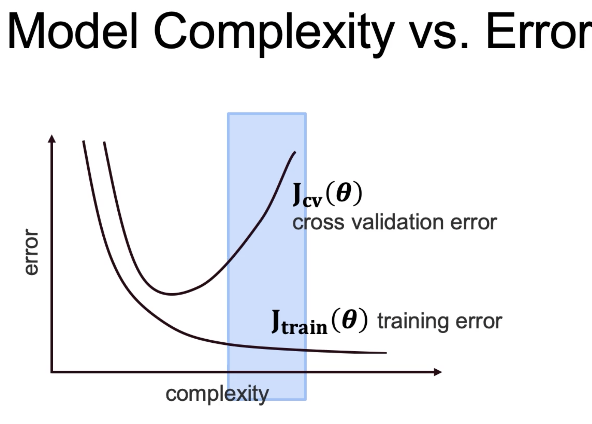

Supervised Learning
Data points have known outcome.
Goal is to predct the nature of relationship between input parameters and target variables.
Parameters: of a machine learning model are 1 or more variables that changes their values as the model learns. No of parameters can range from very few to trillions of parameters.
Hyperparameters: are parameters that not learned directly from the data but relates to implementation.
Two types of problems:
-
Regression: y or the outcome variable is numeric.
- Outcome is continuous.
-
Classification: y or outcome variable is categorical.
- Outcome is categorical.
Some terms of interests are:
- x: input features
- yp: Output or the predicted values
- f(.): prediction function that generates predictions from x and parameters.
- J(y,yp): Loss function
- update rule: using features x and outcome y, choose parameters to minimize loss function J
Interpretation vs Prediction Objective:
- Interpretation: Train model to find insights into data. Focus will be on parameters of the model to gain insights; and a less complex models are chosen.
- Prediction: focus will be on performance metrics of the model. The model cares only about coming with best prediction so can be a black box; complex models can be used. performance metrics involve closeness between yp and y i.e. predicted result vs actual result.
Linear Regression
Measures of errors are: They can be used for any regression model
- Mean Squared Error (MSE)
- Sum of Squared Error (SSE) = sum (error^2)
- Total Sum of Squares (TSS) = Variance of error
- Coeffecient of Determination (R^2): 1-(SSE/TSE). Closer to 1 is better.
It is not a requirement that the target variable is normally distributed; but normally distributed target variable gives better result. What is required is that the error needs to be normally distributed.
If the target variable is not normally distributed, you can make it by transforming it. Then, fit our regression to the transformed values.
To see if the target variable is normally distributed, we can see manually or do a statistical test.
- For manual approach, we can plot the distribution using df['target_variable'].hist(). It should visually show the data thus helping us see if the data is normally distributed.
- Using D'Agostino K^2 Test, you can use library function normaltest() from library scipy.stats.mstats. This gives out a p-value. The higher p-value indicates the distribution is more closer to being normal. A lower p-value indicates distribution is far low probability of being a normal distribution. A threshold of 0.05 or 0.01 can be used for cutoff.
To transform a variable (target variable) to make it normally distributed, commonly used techniques are:
- Log transform: Just take log of the data. The data will look a lot more normal distributed. This works best for data that exhibits exponential property.
- Square Root: Just take square root of the data.
-
Box Cox: It is a parameterized transformation.
- Box-Cox transformed value of a variable y is (y^lambda -1)/lambda.
- This is a generalization of the square root transformation, but it allows for the root value to vary and find the best one.
- Use boxcox from scipy.stats in code; as y_transformed = boxcox(df['y'])[0]. Function boxcox returns an array, the first item is the transfored array whereas the second item the lambda that was used.
How to use:
- Import sklearn library as sklearn.linear_model.LinearRegression
- create an object as LR=LinearRegression(). You can also pass many other hyperparameters into the object creation.
- Create X df from the actual dataset by dropping the target variable column so that it is easy for further computation. Similarly, create Y by just grabbing the target variable as it column.
-
Fit and transform the X data with the polynomial feature object.
- First create an object as pf = PolynomialFeature(degree=2,include_bias=False), that is from sklearn.preprocessing. The include_bias is False because later on LinearRegression will take care of that part.
- Fit and transform as X_pf = pf.fit_transform(X). X_pf now has a lot more columns that what X had.
-
Test-Train split:
- x_train, x_test, y_train, y_test = test_train_split(X_pf,y,test_size=0.3,random_state="some int value") where test_train_split is from sklearn.model_selection.
-
Now apply standard scaler to the train data.
- s = StandardScalar()
- x_train_s = s.fit_transform(x_train)
-
Now to bring the target variable to the normal distribution, we will use boxcox as discussed above.
- y_train_bc = boxcox(y_train)[0]
- We also need the lambda value for later when we need to compute inverse. so, lam=boxcox(y_train)[1]
-
Fit the train data as LR = LR.fit(x_train_s, y_train_bc). Here we used:
- standard scalar fit and transfored x- data.
- boxcoxed y- data
- Since the x- data used for modeling was transformed data, let us fit and transform the x_test data to StandardScalar, i.e. x_test_s = s.transform(x_test)
- The predicted value will be boxcoxed transformed; i.e. y_pred_bc = lr.predict(x_test_s).
- To find the y_pred_bc back to the same scale as y, we can inverse boxcox. y_pred = inv_boxcox(y_pred_bc,lam).
- Finally, compute the R2 score using R2 = r2_score(y_pred,y_test).
- Using boxcox on the target variable improves the R2 score (higher is better). In the above example, if done without boxcox, the R2 score will be lower.
Data Splits and Cross Validation
To split to have a hold out data, so that its used for cross validation.
Training data:
- Used for training.
- model(x_train,y_train).fit() = model
Test data:
- Used for testing and prediction.
- model.predict(x_test) = y_pred
Syntax for test train split
- from sklearn.model_selection import test_train_split
- train,test = test_train_split(data,test_size=0.3)
- x_train,x_test, y_train, y_test = test_train_split(x,y,test_size=0.3)
-
There are other many ways for splitting, like shuffle split or stratified shuffle split.
from sklearn.model_selection import ShuffleSplit
Categorical Data is one-hot encoded. The number of columns that is made as a result of one-hot encoding is equal to no of category values - 1. The process is outline below:
- Find the columns whose dtypes is np.object, i.e. mask = df.dtypes==np.object.
- And, filter out the columns cols = df.columns[mask]. These are the columns that we want to apply one-hot encoding to.
- We would also like to see if the no of unique values in the columns are more than one. If there is only 1 unique value, it does not make sense to one-hot encode.
Using sklearn.preprocessing.OneHotEncoder, instead of pd.get_dummies
- df_copy = df.copy()
- instantiate one hot encoder object, ohc = OneHotEncoder()
-
inside a for loop for each column, col in the cols list:
- dat = ohc.fit_transform(df_copy[col])
- drop the original column, df_copy.drop(col,axis=1)
- get the name of all the new columns, new_cols = ohc.categories_
-
create name of columns so that its easy to join in the df later
new_cols = ['_'.join([col,catt]) for cat in new_cols[0]] -
create a df from the one hot encoded data
new_df = pd.DataFrame(dat.toarray(),columns=new_cols) -
now append to our copy df
df_copy = pd.concat([df_copy,new_df],axis=1 )
- One potential issue with too many one-hot encoded df is that Too many parameters, overfitting of model. Error will be high in test data is overfit.
Applying scalar like StandardScalar or MinMaxScalar, make sure to call fit_transform() on the training data; but only transform() on the test data. This should be done before applying linearregression. An example is given below.
-
create an object, for example
s = StandardScalar() -
fit transform x_train data
x_train_s = s.fit_transform(x_train) -
transform x_test data
x_test_s = s.transform(x_test) -
fit the linearRegression model
LR.fit(x_train_s,y_train) -
predict
predictions = LR.predict(x_test_s) -
find error
error = mean_squared_error(y_test,predictions)
Cross Validation
Here we use multitple validation sets. These are test sets that are disjoint of each other. For each case of validation sets, the train dataset can be a subset of the remaining dataset. There should be no overlap between the validation or test splits in each iteration of experiment. Training data can have overlap.
The average error across all these validation sets is the cross validation result.
As the model gets more complex, the train error will minimize. But with the cross validation, there is an inflection point, and as the complexity increases, the error will increase. This is because too complex model will not generalize properly, and overfit. This we should stop increasing the complexity as soon as the crossvalidation error starts to increase. 
Coding example:
-
import library
from sklearn.model_selection import cross_val_score -
perform cross val score
cross_val = cross_val_score(model, x_data, y_data, cv=4, scoring='neg_mean_squared_error') - Other methods as follows are also available from sklearn.model_selection import KFold, StratifiedKFold
Using Pipeline and Crossvalidation
- Import all needed library from sklearn.linear_model import LinearRegression, Lasso, Ridge
- From the dataset, acquire the target variable as Y, and drop the value from original df to save it as X.
-
Use kfold that is imported as
from sklearn.model_selection import KFold, cross_val_predict
kf = KFold(shuffle=True, random_state=6644, n_splits=3)
This means we will have 3 training and 3 test sets. Training sets may overlap, but test sets will not overlap. -
kf.slit(X) will give a generator object that has indices. For example, iterating through the generator gives a tuple with x-indices and y-indices as follows:
for train_index, test_index in kf.split(X):
The index values, train_index, test_index can be anything from 0 to length of X-1, with length being determined by the split value. -
Once the indices are obtained, extract the value from the X and Y using the indices.
for train_index, test_index in kf.split(X):
..X_train,X_test, y_train, y_test = (X.iloc[train_index], X.iloc[test_index],y[train_index],y[test_index])
..lr.fit(X_train, y_train)
..y_pred = lr.predict(X_test)
..score = r2_score(y_test.values, y_pred)
This will show the scores for all the splits. -
Let us add standard scalar into this. Without any regularization, scaling does not help Linear Regression. But just to see an example, following can be done.
s = StandardScalar()
for train_index, test_index in kf.split(X):
..X_train,X_test, y_train, y_test = (X.iloc[train_index], X.iloc[test_index],y[train_index],y[test_index])
..X_train_s = s.fit_transform(X_train)
..lr.fit(X_train_s, y_train)
..X_test_s = s.transform(X_test) ..y_pred = lr.predict(X_test_s)
..score = r2_score(y_test.values, y_pred)
This will show the scores for all the splits.
Using pipeline
- Sklearn allows to chain multiple operator items, as long as as they have fit() method.
- Here, output of one is input of another. So they also need to have fit_transform() method.
-
The above code will now be following using pipeline:
-
s = StandardScalar()
lr = LinearRegression() - my_pipe = Pipeline([('scalar',s),('regression',lr)])
- kf = KFold(shuffle=True, random_state=6644, n_splits=3)
- predictions = cross_val_predict(my_pipe,X,y,cv=kf)
- r2_score(y,predictions
-
s = StandardScalar()
HyperParameter Tuning, Lasso Regression, PolynomialFeature
- function used is np.geomspace
- For Lasso Regression, higher value of alpha means the model is less complex whereas lower value of alpha means model is more complex.
- Less value of alpha for lasso makes the model similar to LinearRegression.
-
Lasso is iniitalized as
lasso=Lasso(alpha=alpha, max_iter=10000) -
Complete usage with different values of alpha for hyperparameters selection is as follows:
alphas = np.geomspace(1e-9,1e10,num=10) #creates equally spaced 10 numbers, geometrically spaced
for alpha in alphas:
.. lasso = Lasso(alpha=alpha,max_iter=100000)
.. my_pipe = Pipeline([('scalar':s),("lasso":lasso)])
.. pred = cross_val_predict(my_pipe,X,y,cv=kf)
.. score = r2_score(y,pred) - With Lasso, its is always better to scale the data before using lasso regression.
You can add PolynomialFeature to the pipeline. What a PolynomialFeature does is very well explained at this link. In a nutshell, it raises the input variables to a polynomial degree. So, after applying the PolynomialFeature, the input dimension now increases.
The above example thus becomes:
-
pf = PolynomialFeature(degree=3)
alphas = np.geomspace(1e-9,1e10,num=10) #creates equally spaced 10 numbers, geometrically spaced
for alpha in alphas:
.. lasso = Lasso(alpha=alpha,max_iter=100000)
.. my_pipe = Pipeline([('polyfeat':pf),('scalar':s),("lasso":lasso)])
.. pred = cross_val_predict(my_pipe,X,y,cv=kf)
.. score = r2_score(y,pred)
After going through the different scores based on various alpha values, we can find the best among all. And finally train the model as follows:
-
best_pipe = Pipeline([
("poly_feat":PolynomialFeature(degree=2)),
("scalar":s),
("lasso":Lasso(alpha=0.01,max_iter=100000))
])
best_pipe.fit(X,y)
best_pipe.score(X,y)
-
To see the coeffecients, we can
best_pipe.named_steps['Lasso'].coef_ - Ridge Regression also works the same way as far as the coding aspect is concerned.
-
From the pipeline estimator that we created, we can actually see the interaction of the different input variables and the their contribution to the output variable.
From the pipeline, polynomial feature gives the higher power of the input variable as well as the interaction components. The corresponding coefficient of the Lasso/Ridge regression model will indicate their relative contribution. Higher positive value indicates positive impact whereas higher negative value indicates negative impact.
from the best_pipe.named_steps['poly_feat'].get_feature_names(input_features=X.columns) gives the feature names whereas as seen before .coef_ gives the lasso/ridge coefficient.
Grid Search CV